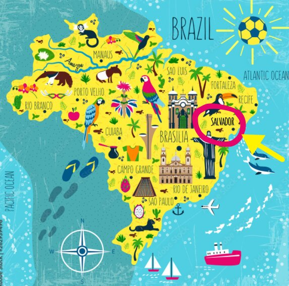

Wo liegt Salvador?
Salvador liegt am Nordosten Brasiliens, in dem Bundesstaat Bahia.
Fakten:
Salvador
ist die Haupstadt, des Bundestaates BahiaWurde im Jahr 1549 gegründet
Erste Haupstadt Brasiliens
Die Stadt hat ein tropisches Klima
Es leben ca. 2,5 Millionen Menschen in Salvador